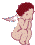
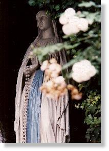
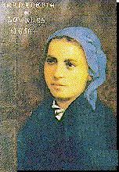
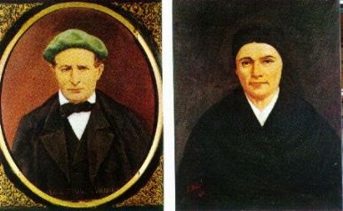
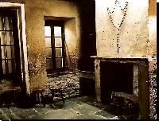

"MOTIVO DA MANIFESTAÇÃO SOBRENATURAL"
 
Como lembramos, o "DOGMA DA IMACULADA CONCEIÇÃO, afirma que Maria desde o primeiro instante de sua conceição, por privilégio singular do CRIADOR e atendendo aos merecimentos de NOSSO SENHOR JESUS CRISTO, FILHO DE DEUS e seu Divino FILHO, foi preservada do Pecado Original".
A satisfação do povo católico e do clero foi indescritível, isto porque, os Papas e a maioria dos cristãos, já consideravam esta verdade plenamente aceita. E por isso houve comemorações em todo o mundo, para jubilosamente dar ênfase ao Dógma, que ardentemente a Igreja almejava.
Assim, com a decretação da Bula Papal "Ineffabilis DEUS", Sua Santidade também reagia contra a maldade dos opositores e heresiarcas, fazendo exaltar com o necessário destaque, esta especial e extraordinária prerrogativa de NOSSA SENHORA.
Todavia, apesar do reconhecimento oficial da Igreja, uns poucos teólogos Católicos que pregavam a universalidade do Pecado Original, acompanhados de cristãos pouco informados, assim como pessoas de outras religiões, não acolheram o Dogma e nem a proclamação do Sumo Pontífice, criando uma indesejável divisão entre os cristãos, que roubava a harmonia espiritual que devia existir, primordialmente num tema tão relevante que envolve a MÃE DE DEUS.
Por esse motivo principal, aconteceu a intervenção sobrenatural, para fazer com que a Verdade prevalecesse e ficasse em destaque, ao alcance e conhecimento de todos os corações de boa vontade -Maria desde o primeiro instante de sua conceição no ventre de sua mãe, pela Vontade do CRIADOR, estava Imaculada, isenta de todos os pecados, inclusive dos mais leves e insignificantes.
O local escolhido para a grandiosa manifestação Divina foi no sul da França, num pequeno recanto pouco habitado chamado Lourdes.
BERNADETE SOUBIROUS
- Para que a Intervenção não deixasse dúvida sobre a sua autenticidade, o CRIADOR escolheu uma jovem simples, humilde e sem qualquer instrução, que vivia com os pais e irmãos, de favor num cômodo , numa terrível e deplorável pobreza.
Bernadete nasceu em Lourdes,
a 7 de janeiro de 1844, no moinho de Boly, que seu pai Francisco 
Bernadete, ou Maria Bernarda tinha três irmãos: Antonieta Maria (Toinete) João Maria e Justino.
Em 1852 os Soubirous atingiram a faixa perigosa da falta de dinheiro, em consequência da má administração do moinho. Tinham "pena" dos que não pagavam as contas e muitas vezes não se recusavam até em adiantar-lhes a farinha, por conta da próxima colheita.
Todos os clientes que traziam trigo para moer, ou que levavam a farinha, eram "muito bem tratados" pela moleira, que lhes servia vinho, queijo e até bolo. Ninguém fazia economia. Sem vaidade, mas por excesso de bondade, ofereciam o "máximo" a todos os visitantes .
Isto resultou no afastamento da clientela "boa" , aquela que pagava regularmente as contas, porque eles observando aquele desperdício, prenunciaram um péssimo desfecho para o negócio do senhor Francisco e ficaram receosos de involuntariamente serem também envolvidos em algum "desastre comercial".
Mas a clientela "ruim", aqueles que iam para se aproveitarem da fidalguia
dos Soubirous, 
Em 1854 tiveram que mudar de casa. Seu pai vendeu o moinho para pagar dívidas e procurou emprego para poder viver.
Em 1855, convidada por uma tia, Bernadete foi morar em companhia dela, a fim de ajudá-la num pequeno restaurante e na execução de serviços caseiros, como remendar roupas, fazer barrela, coser, etc. Isto de certa forma foi bom para os seus pais, porque lhes aliviou o orçamento doméstico. Era uma boca a menos à alimentar. Mas pouco adiantou; em 1856, por causa do desemprego na região, os Soubirous são despejados da casa na rua Rives por falta de pagamento, e tiveram que deixar algumas peças do mobiliário, que já era pequeno, para pagar a dívida.
Como não tinham local para morar,
porque ninguém queria alugar-lhes uma casa, Francisco foi procurar um
primo, André Sajous, que tinha recebido de herança de um tio
chamado Taillade, o prédio da antiga cadeia municipal, o "
cachot (calabouço)" (foto abaixo), que estava abandonado, e
onde André também morava com sua esposa e cinco filhos, num
cômodo na parte superior. Sobrava um cômodo na parte inferior,
que anualmente era alugado para uns miseráveis espanhóis. Era
um buraco infecto e sombrio, a divisão inabitável da antiga 
Por esta ocasião, Bernadete já tinha voltado para junto de seus pais e irmãos. Na umidade daquele local, periodicamente sua asma crônica se manifestava em acessos violentos de tosse que a deixava quase sem fôlego.